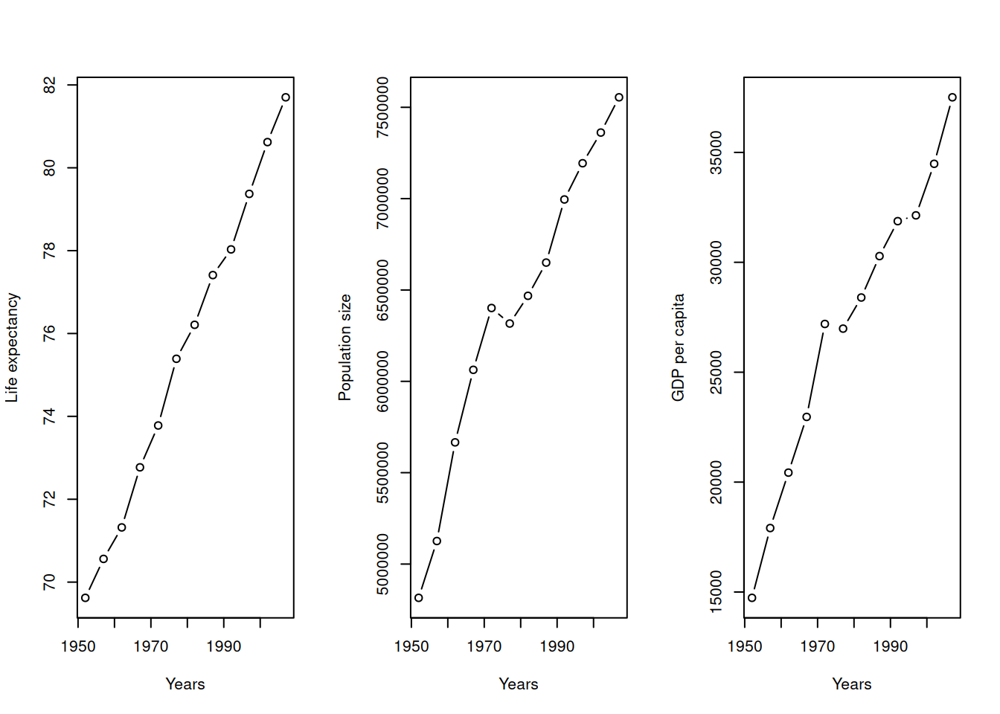
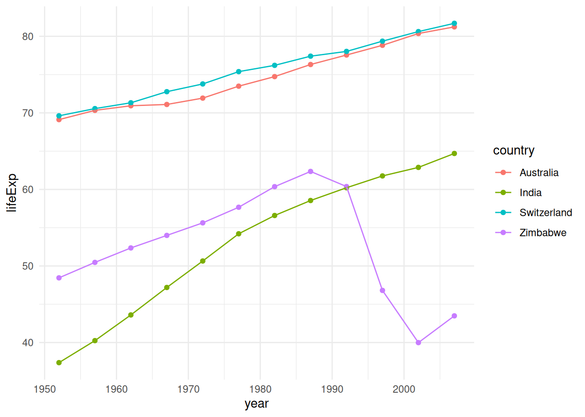
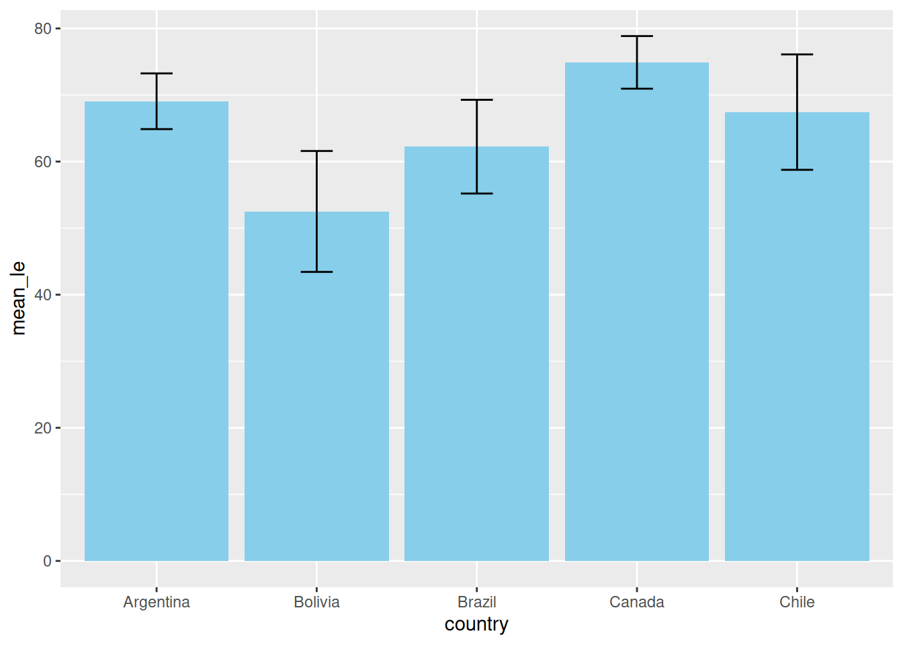
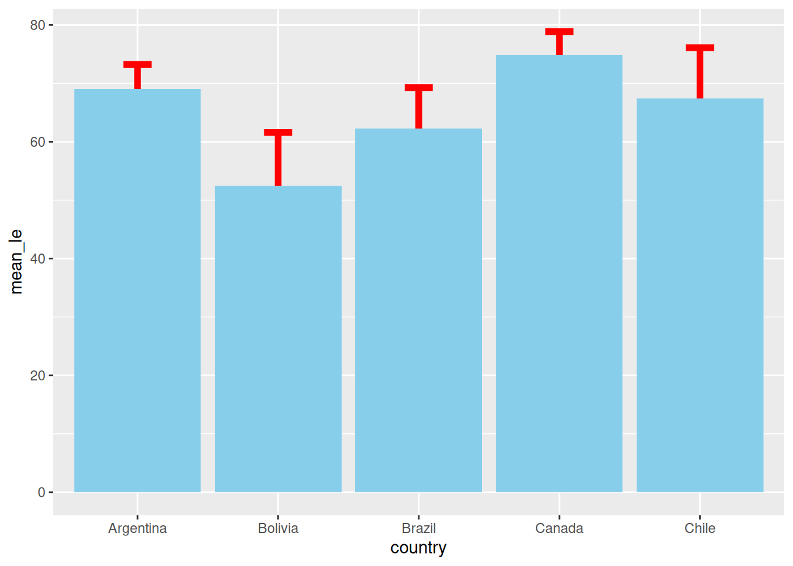
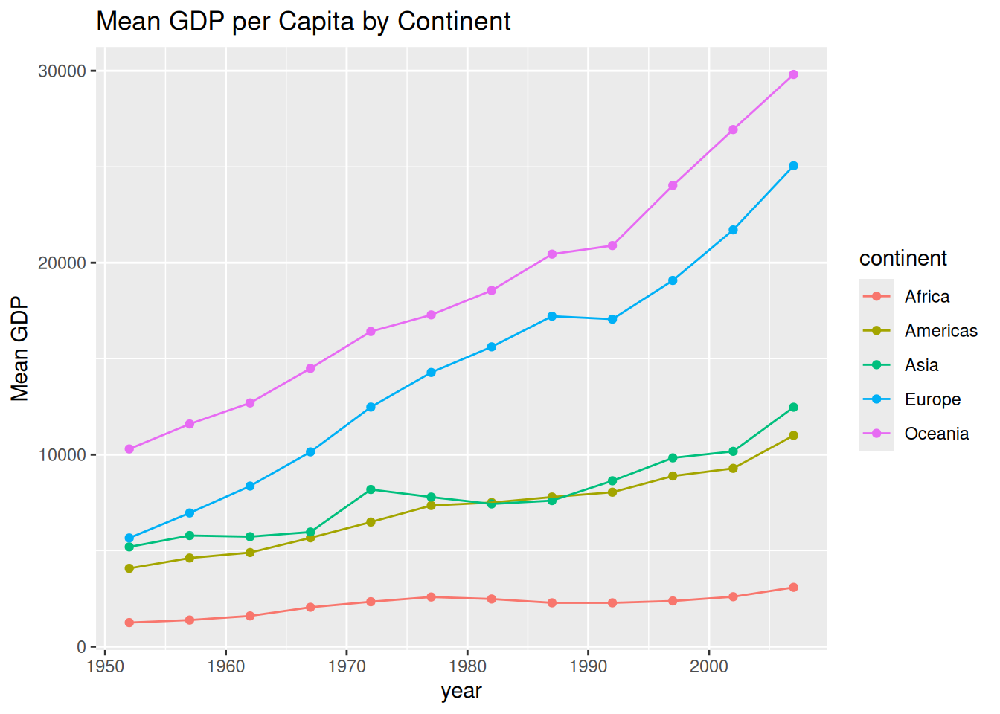
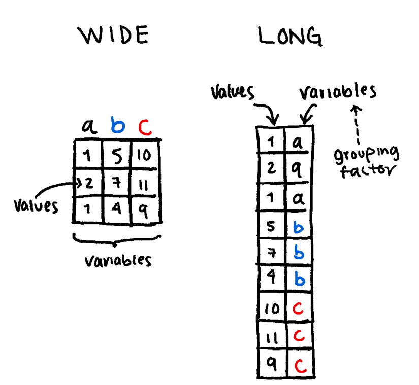
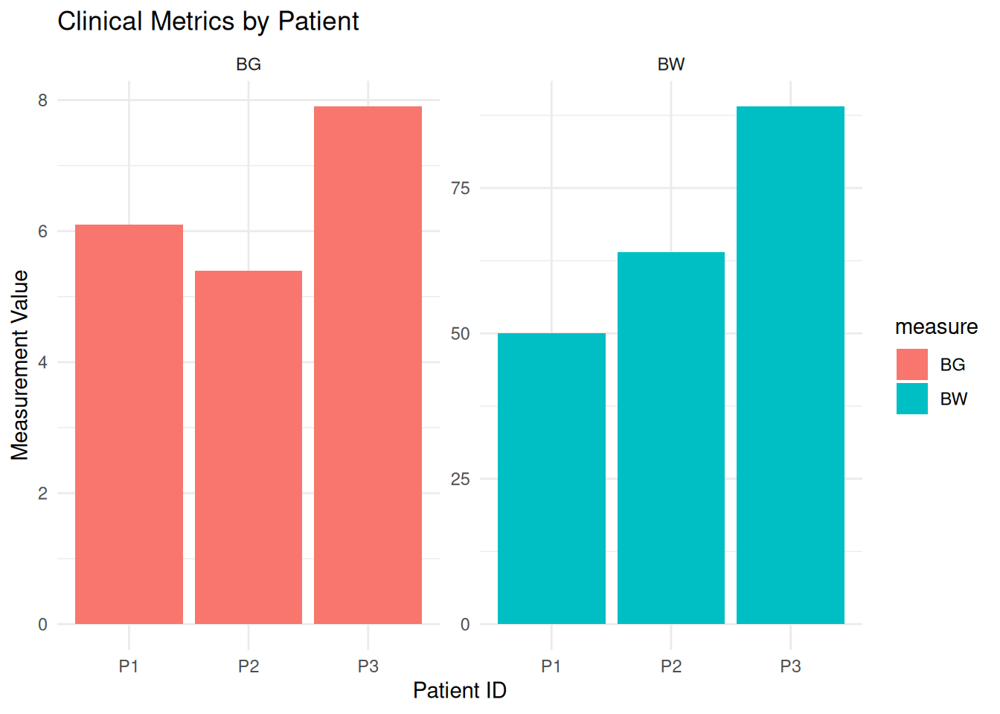
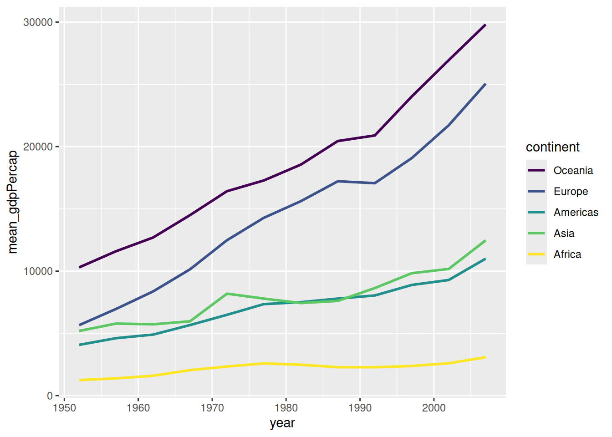
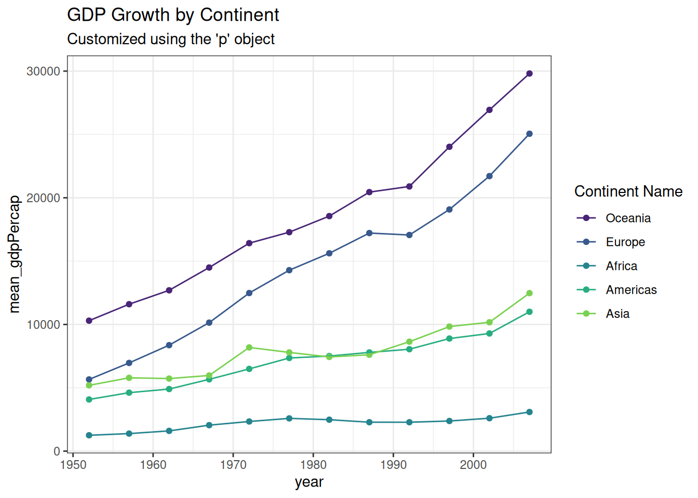
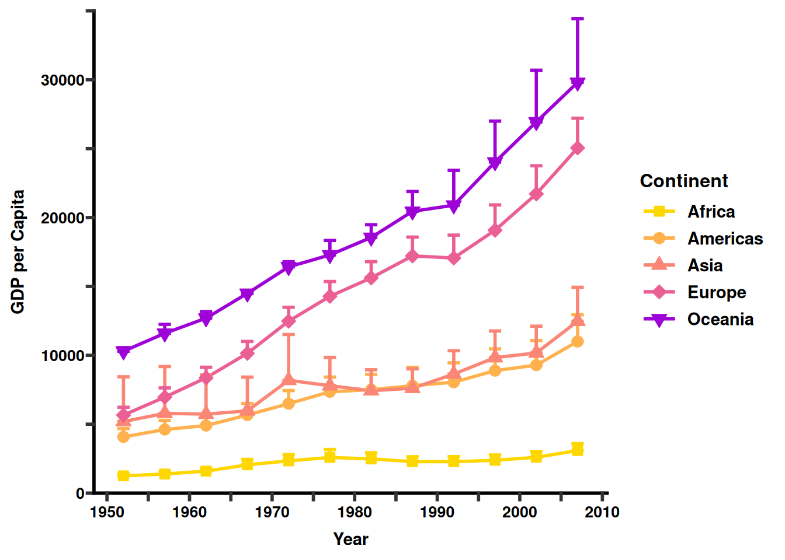

if (!require("gapminder", quietly = TRUE))
install.packages("gapminder")
library(gapminder)
hist(gapminder$lifeExp,
xlab = "Life expectancy",
main = "Histogram of Life Expectancy",
col = "lightblue")
Base R is great for a “quick look” at your data. It is fast because it doesn’t require any extra libraries, but it can be difficult to customize once your plots get complex.
if (!require("gapminder", quietly = TRUE))
install.packages("gapminder")
library(gapminder)
hist(gapminder$lifeExp,
xlab = "Life expectancy",
main = "Histogram of Life Expectancy",
col = "lightblue")
par()If you want to see multiple variables at once (e.g., for Switzerland), you can use par(mfrow = c(rows, cols)) to divide your plotting window.
df_swiss <- gapminder[gapminder$country == "Switzerland", ]
par(mfrow = c(1, 3)) # 1 row, 3 columns
plot(y = df_swiss$lifeExp, x = df_swiss$year, xlab = "Years", ylab = "Life expectancy", type = "b")
plot(y = df_swiss$pop, x = df_swiss$year, xlab = "Years", ylab = "Population size", type = "b")
plot(y = df_swiss$gdpPercap, x = df_swiss$year, xlab = "Years", ylab = "GDP per capita", type = "b")
ggplot2ggplot2 is based on the Grammar of Graphics. Instead of thinking about “plots,” we think about layers:
Data: The dataframe you are using.
Aesthetics (aes): Mapping data columns to visual properties (x, y, color, size).
Geometries (geom): The visual marks (points, lines, bars).
if (!require("ggplot2", quietly = TRUE))
install.packages("ggplot2")
library(ggplot2)
if (!require("dplyr", quietly = TRUE))
install.packages("dplyr")
library(dplyr)
df_subset <- gapminder %>%
dplyr::filter(country %in% c("Switzerland", "Australia", "Zimbabwe", "India"))
ggplot(df_subset, aes(x = year, y = lifeExp, color = country)) +
geom_point() +
geom_line() +
theme_minimal()
The Layering Rule: Why Order Matters
Because ggplot2 builds plots layer-by-layer, objects drawn later can cover up objects drawn earlier. This is most obvious when combining bars and error bars.
Example: Bar Plot vs. Error Bars
Let’s look at what happens when we switch the order of geom_col() (the bars) and geom_errorbar().
Option A: Error Bars on Top
In this version, we draw the bars first, then “paint” the error bars on top. They are fully visible.
# 1. Prepare summary data
df_summary <- gapminder %>%
filter(continent == "Americas") %>%
group_by(country) %>%
summarize(mean_le = mean(lifeExp), sd_le = sd(lifeExp)) %>%
slice_head(n = 5) # Just top 5 for clarity
# 2. Plot: Bars THEN Error Bars
ggplot(df_summary, aes(x = country, y = mean_le)) +
geom_col(fill = "skyblue") + # Layer 1: The Bar
geom_errorbar(aes(ymin = mean_le - sd_le, ymax = mean_le + sd_le),
width = 0.2) # Layer 2: On top of the bar
Option B: Error Bars Underneath
If we draw the error bars first, the bar is painted over them. If your bar is solid (no transparency), half of your error bar disappears!
# 3. Plot: Error Bars THEN Bars
ggplot(df_summary, aes(x = country, y = mean_le)) +
geom_errorbar(aes(ymin = mean_le - sd_le, ymax = mean_le + sd_le),
width = 0.2, linewidth = 2, color = "red") + # Layer 1: Underneath
geom_col(fill = "skyblue")
One of the best features of the Tidyverse is that you can pipe your data manipulation results directly into ggplot(). This avoids creating unnecessary intermediate objects in your environment.
gapminder %>%
dplyr::group_by(continent, year) %>%
dplyr::summarize(mean_gdpPercap = mean(gdpPercap)) %>%
ggplot(aes(x = year, y = mean_gdpPercap, color = continent)) +
geom_point() +
geom_line() +
labs(title = "Mean GDP per Capita by Continent", y = "Mean GDP")
ggplot2 Tricksggplot2 almost always expects data in Long Format (one column for the category, one column for the value). If your data is “Wide” (e.g., each year is its own column), you must tidy it first.
Wide Format: Each row is a unique subject (e.g., a patient), and each column is a different variable or time point. Great for Excel; bad for ggplot2.
Long Format: Each row is a single observation. One column identifies the patient, one identifies the variable type, and one contains the value.

The functions tidyr::pivot_wider() and tidyr::pivot_longer() are very useful to transform one into the other.
For example:
if (!require("tidyr", quietly = TRUE))
install.packages("tidyr")
library(tidyr)
df <- data.frame(
patientID = c("P1", "P2", "P3"),
BW = c(50, 64, 89),
BG = c(6.1, 5.4, 7.9)
)
# Transform to Long Format
df_long <- df %>%
tidyr::pivot_longer(
cols = c(BW, BG), # Columns you want to "melt"
names_to = "measure", # Name for the new category column
values_to = "value" # Name for the new data column
)
print(df_long)# A tibble: 6 × 3
patientID measure value
<chr> <chr> <dbl>
1 P1 BW 50
2 P1 BG 6.1
3 P2 BW 64
4 P2 BG 5.4
5 P3 BW 89
6 P3 BG 7.9ggplot(df_long, aes(x = patientID, y = value, fill = measure)) +
geom_col(position = "dodge") +
facet_wrap(~measure, scales = "free_y") +
theme_minimal() +
labs(title = "Clinical Metrics by Patient",
y = "Measurement Value",
x = "Patient ID")
If you want your legend to appear in a specific order (e.g., descending wealth), you must modify the Levels of your factor.
gapminder %>%
dplyr::group_by(continent, year) %>%
dplyr::mutate(continent = factor(as.character(continent),
levels = c("Oceania", "Europe", "Americas", "Asia", "Africa"))) %>%
dplyr::summarize(mean_gdpPercap = mean(gdpPercap)) %>%
ggplot(aes(x = year, y = mean_gdpPercap, color = continent)) +
geom_line(linewidth = 1) +
scale_color_viridis_d() # Uses a colorblind-friendly palette
You can store the plots in an object and keep adding layers to it.
p <- gapminder %>%
group_by(continent, year) %>%
# Set the order of the legend manually
mutate(continent = factor(continent, levels = c("Oceania", "Europe", "Africa", "Americas", "Asia"))) %>%
summarize(mean_gdpPercap = mean(gdpPercap)) %>%
ggplot(aes(x = year, y = mean_gdpPercap, color = continent)) +
geom_point() +
geom_line()
# Use the viridis discrete scale
p + scale_color_viridis_d(begin = 0.1, end = 0.8) +
theme_bw() +
labs(title = "GDP Growth by Continent",
subtitle = "Customized using the 'p' object",
color = "Continent Name")
A “publication-ready” figure isn’t just one that looks good; it’s one that is legible, accurate, and accessible.
We will use the ggprism package to give our plot a clean, professional “high-end journal” aesthetic.
Notice how we combine all the tricks we’ve learned: manual scales, modulo logic for axes, and theme customization.
if (!require("ggprism", quietly = TRUE))
install.packages("ggprism")
library(ggprism)
# 1. Prepare Data with Standard Error
plot_data <- gapminder %>%
group_by(continent, year) %>%
mutate(continent = factor(continent, levels = c("Africa", "Americas", "Asia", "Europe", "Oceania"))) %>%
summarize(
mean_gdpPercap = mean(gdpPercap),
se_gdpPercap = sd(gdpPercap) / sqrt(n()),
.groups = "drop" # Good practice to ungroup after summarizing
)
# 2. Build the Figure
ggplot(plot_data,
aes(x = year, y = mean_gdpPercap, color = continent)) +
# Lines and Error Bars
geom_line(linewidth = 1) +
geom_errorbar(aes(ymin = mean_gdpPercap,
ymax = mean_gdpPercap + se_gdpPercap),
width = 1.5, linewidth = 1) +
# Points with fillable shapes (21-25)
geom_point(aes(shape = continent, fill = continent), size = 3) +
# Manual Styling
scale_shape_manual(values = c(22, 21, 24, 23, 25)) +
scale_fill_manual(values = c("#ffd700", "#ffb14e", "#fa8775", "#ea5f94", "#9d02d7")) +
scale_color_manual(values = c("#ffd700", "#ffb14e", "#fa8775", "#ea5f94", "#9d02d7")) +
# Axis Customization
scale_x_continuous(
breaks = seq(1950, 2010, 5),
labels = ifelse(seq(1950, 2010, 5) %% 10 == 0, seq(1950, 2010, 5), "")
) +
scale_y_continuous(
breaks = seq(0, 35000, 5000),
labels = ifelse(seq(0, 35000, 5000) %% 10000 == 0, seq(0, 35000, 5000), ""),
limits = c(0, 35000), expand = c(0, 0)
) +
# Labels and Theme
labs(x = "Year",
y = "GDP per Capita",
fill = "Continent",
color = "Continent",
shape = "Continent") +
theme_prism() +
theme(
legend.title = element_text(size = 12, face = "bold"),
legend.text = element_text(size = 11, face = "bold"),
axis.title = element_text(size = 11, face = "bold"),
axis.text = element_text(size = 10),
axis.line = element_line(linewidth = 1),
axis.ticks = element_line(linewidth = 1),
axis.ticks.length = unit(0.15, "cm")
)
What makes this figure “Advanced”?
theme_prism(): This instantly changes the tick marks and axis lines to be thicker and more pronounced, which is the standard “Prism” look.
Color Syncing: We mapped continent to color, fill, and shape. By ensuring the labels in the labs() function are all named the same (“Continent”), R merges them into one clean legend.
Visual Breathing Room: By using ifelse on the labels, we keep the x-axis from becoming a crowded mess of numbers while still showing where the 5-year intervals sit.
Error Bars: In bioinformatics, showing the spread of data (SE or SD) is mandatory. Using geom_errorbar adds that layer of statistical trust to your figure.
Creating a publication-ready figure is part science and part art. When you get stuck or need inspiration for a complex “prism-like” figure, these are the best places to look.
These resources are specifically designed for high-impact biological and medical journals (Nature, Science, Cell).
Tips for Troubleshooting
When you can’t get a plot to look exactly right:
Be Specific with AI: Don’t just ask “How do I make a bar plot?” Ask: “In R ggplot2, how do I change the legend title size and reorder the x-axis factors?”
The “Cheat Sheet” Search: Search Google Images for “ggplot2 cheat sheet”. Keep a printed copy of the official Posit Cheat Sheet on your desk.
Check the “Geom”: If the plot looks weird, 90% of the time it’s because the data isn’t in the Long Format we discussed in Section 3.